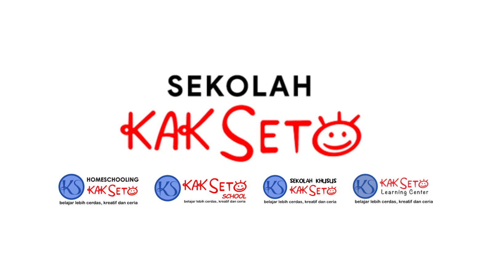

Dashboard Tracking CS SKS
Bulan: Semua Bulan | Tahun: Semua Tahun
0 Sheet Terbaca
Real-time visualisasi data dinamis dari Google Sheets Sekolah Kak Seto
Bulan:
Semua Bulan
Januari
Februari
Maret
April
Mei
Juni
Juli
Agustus
September
Oktober
November
Desember
Tahun:
Semua Tahun
Filter CS:
Semua Data
🔄
Sync Data
Memuat data dari Google Sheets...
📋
1. Report Leads
👥
2. Rekapitulasi CMB
🎓
3. Rekapitulasi Murid
📊 Persentase & Distribusi Data